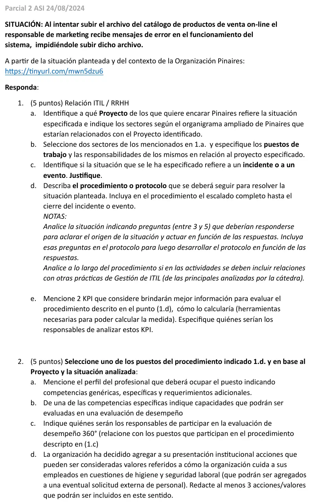

2° parcial, 24/08/2024
2° parcial, 24/08/2024
Enunciado


Propuesta de respuesta
Respuesta no verificada. La propuso Luta Studios con inteligencia artificial y ningún docente la revisó. Puede tener errores.
1. Relación ITIL y RRHH
1a. Proyecto y sectores. La situación refiere al proyecto de Transformación Digital, en la parte de venta online, porque el catálogo de productos que no se puede subir es el de la tienda. Los sectores relacionados son Marketing (dueño del catálogo), Comercial y Ventas online, Inventario y Logística (stock y despachos de lo que se vende) y Sistemas, con la mesa de ayuda, Desarrollo e Infraestructura.
1b. Dos sectores y sus puestos
| Sector | Puesto | Responsabilidades en el proyecto |
|---|---|---|
| Sistemas, mesa de ayuda | Analista de soporte de primera línea | Punto único de contacto con Marketing. Registra, clasifica y resuelve con la KB lo que puede, y escala lo demás |
| Sistemas, Desarrollo | Desarrollador web (cluster Desarrollo de CESSI) | Mantiene la tienda y su módulo de carga del catálogo. Atiende como segunda línea los errores del sistema, corrige y prepara el pase a producción |
| Sistemas, Infraestructura | Administrador de servidores | Mantiene los servidores y el almacenamiento de la tienda. Atiende como segunda línea las fallas de espacio, permisos o servicio |
1c. Es un incidente. El apunte lo define como «una interrupción no planificada de un servicio o la reducción de la calidad de un servicio». La carga del catálogo es parte del servicio de venta online y dejó de funcionar sin estar planificado. Un evento sería un cambio de estado detectado por el monitoreo o por el CI. Acá el usuario ya no puede trabajar.
1d. Procedimiento con escalado.
Preguntas para aclarar el origen:
- ¿Qué mensaje de error aparece, exactamente?
- ¿Es la primera vez o ya le había pasado? ¿Antes podía subir este mismo archivo?
- ¿El archivo tiene el formato, el tamaño y las columnas de siempre?
- ¿Le pasa a otros usuarios o con otro archivo?
- ¿Hubo un cambio reciente en la tienda o en el sistema?
| Paso | Quién | Qué hace según las respuestas |
|---|---|---|
| 1. Registro | Analista de primera línea | Registra el incidente, verifica que no esté duplicado (otros usuarios con el mismo error) y le asigna identificador |
| 2. Clasificación | Analista de primera línea | Impacto según cuántos productos quedan sin publicar, urgencia según la fecha de lanzamiento del catálogo, y con eso la prioridad |
| 3. Diagnóstico | Analista de primera línea | Si el archivo cambió de formato o de tamaño (pregunta 3), corrige con el usuario usando la KB y resuelve. Si el mensaje es de espacio o de permisos (pregunta 1), escala a Infraestructura. Si le pasa a todos o hubo un cambio reciente (preguntas 4 y 5), escala a Desarrollo |
| 4. Escalado funcional | Desarrollador web o Administrador de servidores, segunda línea | Analiza los logs, reproduce el error y lo corrige. Si el error vino de un cambio, propone volver atrás |
| 5. Escalado funcional | Proveedor de la plataforma de la tienda, tercera línea (contrato UC), si existe | Corrige el producto si el error es suyo |
| 6. Escalado jerárquico | Jefe de Sistemas | Si el catálogo no se publica a tiempo, decide junto con Marketing la contingencia, como cargar los productos a mano o postergar la publicación |
| 7. Cierre | Analista de primera línea | Confirma con el responsable de Marketing que el catálogo subió, actualiza la KB y la CMDB y cierra |
Relaciones con otras prácticas:
- Control de Cambios y Versiones. Si la causa es un cambio reciente en la tienda, la corrección o la vuelta atrás va por un RFC y el pase de versión.
- Gestión de Problemas. Si el error se repite o lo tienen varios usuarios, se abre un problema para buscar la causa raíz.
- Configuración y Activos. La CMDB muestra qué versión del módulo de carga está en producción y de qué servidores depende.
- Gestión de Solicitudes. Si el usuario necesitaba permiso para un formato nuevo, eso es una solicitud, no un incidente.
1e. Dos KPI
| KPI | Cómo se calcula | Herramientas | Responsable |
|---|---|---|---|
| Tasa de resolución en la primera llamada | Incidentes resueltos por la primera línea sin escalar / incidentes registrados × 100 | Herramienta de tickets con el registro de escalados | Responsable de la mesa de ayuda |
| Porcentaje de incidentes resueltos dentro del SLA | Incidentes cerrados dentro del tiempo acordado / incidentes cerrados × 100 | Herramienta de tickets con horas de registro y cierre, y el SLA acordado con Marketing | Jefe de Sistemas |
2. El puesto de Desarrollador web
2a. Perfil
| Aspecto | Detalle |
|---|---|
| Competencias genéricas | Trabajo en equipo, proactividad, comunicación con usuarios no técnicos, orientación al cliente interno |
| Competencias específicas | Desarrollar y mantener aplicaciones web y de comercio electrónico. Diagnosticar errores con logs y depuración. Manejar bases de datos y formatos de intercambio de archivos. Aplicar control de versiones y pases a producción |
| Requerimientos adicionales | Título o estudios avanzados de Ingeniería en Sistemas o afín. Dos años de experiencia en comercio electrónico. Disponibilidad para guardias en lanzamientos |
2b. Capacidades para la evaluación de desempeño
Competencia específica «Diagnosticar errores con logs y depuración».
| Capacidad | Descripción | Escala |
|---|---|---|
| Análisis | Encuentra la causa del error a partir de logs y de las respuestas del usuario | 1 a 5 |
| Resolución en tiempo | Resuelve los incidentes escalados dentro del SLA | 1 a 5 |
| Documentación | Deja la causa y la solución en la KB para la primera línea | 1 a 5 |
| Prevención | Propone mejoras para que el error no se repita | 1 a 5 |
2c. Evaluación 360. Recopila información de las personas del entorno laboral del desarrollador, tomadas del procedimiento del punto 1d.
| Quién | Qué mira |
|---|---|
| Jefe de Sistemas, su superior | Cumplimiento de los objetivos y del SLA |
| Analista de primera línea | Cómo responde a los escalados y si deja documentado en la KB |
| Administrador de servidores, su par | Cómo colabora en los incidentes compartidos |
| Responsable de Marketing, cliente interno | Si la solución llegó a tiempo y si le explicó lo que pasó |
| El propio desarrollador | Autoevaluación |
2d. Acciones de higiene y seguridad para la presentación institucional
- Puestos de trabajo ergonómicos, con sillas regulables, pantallas a la altura de los ojos y buena iluminación, para adaptar el trabajo a la persona.
- Pausas activas y control de la carga de trabajo, para prevenir la fatiga mental y los trastornos músculo-esqueléticos del trabajo frente a la pantalla.
- Exámenes médicos preocupacionales y periódicos, con servicio médico para el personal.
- Capacitación en prevención para todo el personal de planta y de oficinas, y un comité mixto de higiene y seguridad con participación de los trabajadores.
- Cobertura de la ART y cumplimiento de la Ley 19.587 de Higiene y Seguridad en el Trabajo.
Respuesta no verificada. Puede tener errores.
Se armó con 2° parcial, definiciones de incidente y evento del apunte de Áreas de TI, actividades, prioridad y escalado de incidentes, prácticas relacionadas, KPI de incidentes, perfiles CESSI, competencias, evaluación por capacidades y 360, y principios de prevención de higiene y seguridad.
Quedó en duda: El contexto y el organigrama ampliado de Pinaires no están en la materia, así que la lista de proyectos, los sectores y los puestos son supuestos. El catálogo de venta online se ubicó en Transformación Digital. Si el contexto tiene un proyecto de comercio electrónico aparte, va en ese. La consigna 2c remite a los puestos de «(1.c)», pero el procedimiento está en 1d, y se usó el 1d.
¿Cómo te fue?
Marcá cada tema del examen.
- ITILITIL, en Final
- PerfilesCompetencias y perfil, en 2° parcial
- Evaluación de desempeñoEvaluación de desempeño, en 2° parcial
- Higiene y seguridadHigiene y seguridad laboral, en 2° parcial